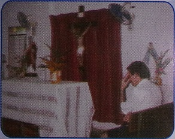
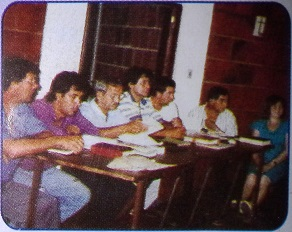
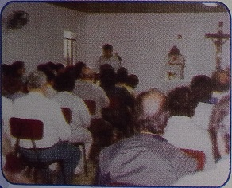
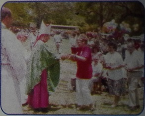
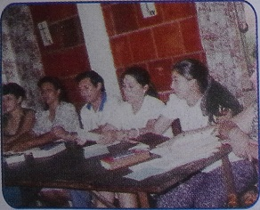
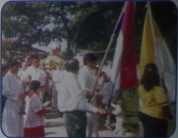

Inicio
Nosotros
Objetivos
Eventos
Novedades
Contacto
Son objetivos de la
Fundación
Posibilitar la realización de los Cursillos de Cristiandad. MCC DE COLORES
 
Servir de apoyo a la pastoral de la Iglesia en el Paraguay, promoviendo la formación de líderes cristianos.
 
Organizar cursos, seminarios, conferencias, encuentros y otros servicios destinados a la formación humano-cristiana del laicado paraguayo.
 